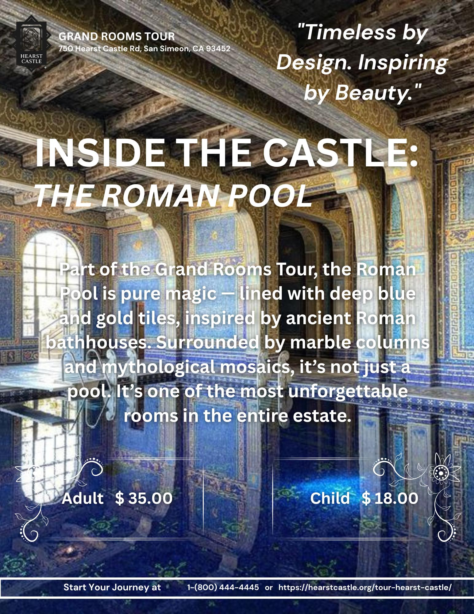
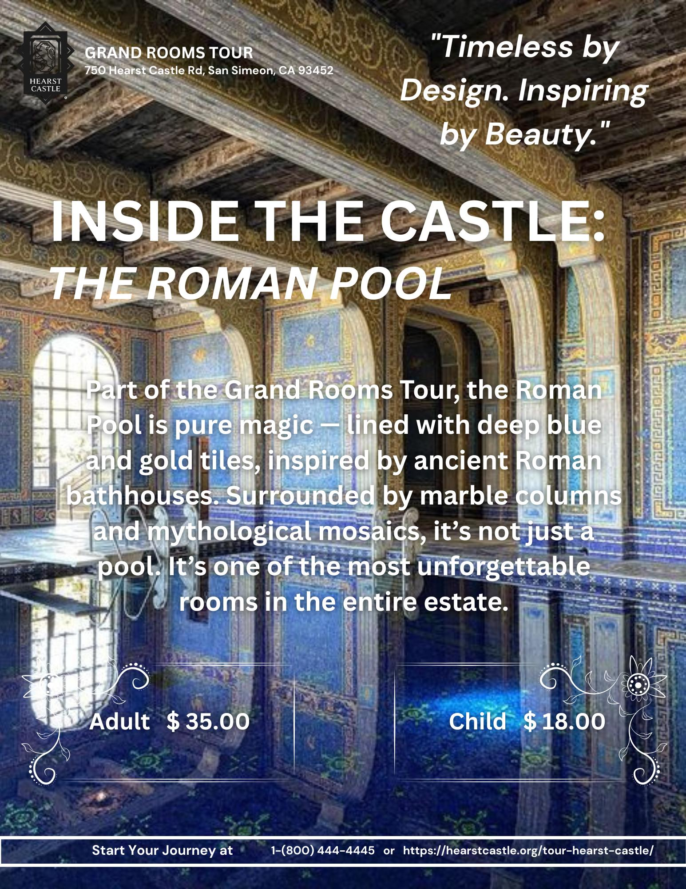

Hearst Castle Campaign
As part of a Contect Creation class branding project for Hearst Castle, I created two promotional Canva graphics designed to highlight its historic beauty and appeal to creative, curious travelers. The tone aimed to feel timeless, serene, and elegant — in line with our strategic brand messaging.
 

These ads were targeted at adults aged 30–65, including professionals, educators, and retirees — people who value architecture, history, and culture. The goal was to increase spring/fall visitation by emphasizing peaceful evening tours and scenic beauty.